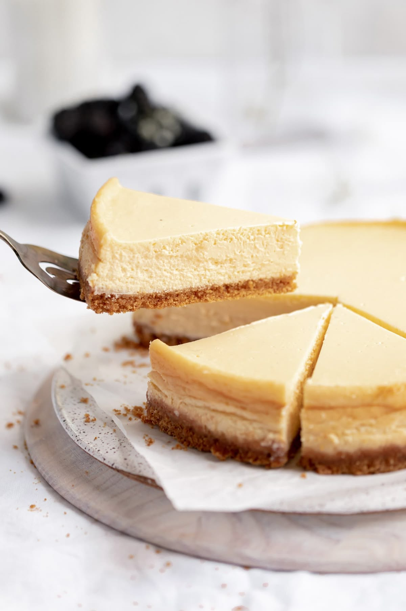

Cheesecake

Zutaten
- 200 g Butterkekse
- 100 g geschmolzene Butter
- 500 g Frischkäse
- 150 g Zucker
- 2 Eier
- 1 TL Vanilleextrakt
Zubereitung
- Kekse zerbröseln und mit der Butter vermischen.
- In die Form drücken und kaltstellen.
- Frischkäse, Zucker, Eier und Vanille verrühren.
- Auf den Boden geben und 45 Minuten bei 170°C backen.